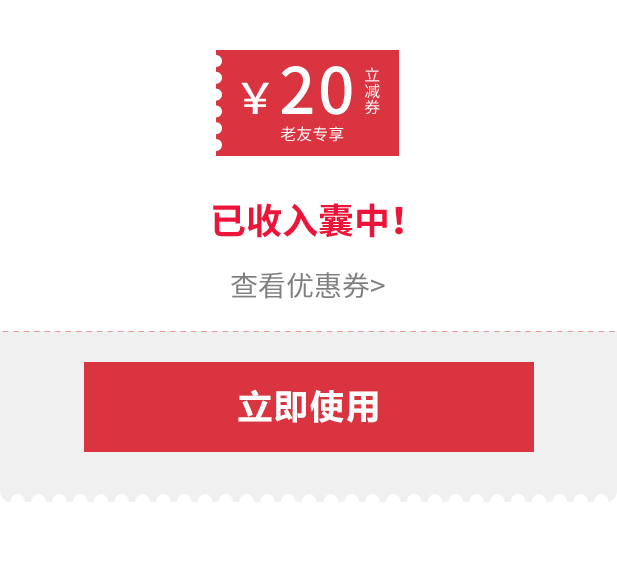

<!--
  Generated template for the LoginPage page.

  See http://ionicframework.com/docs/components/#navigation for more info on
  Ionic pages and navigation.
-->
<ion-header>

  <ion-navbar>
    <ion-title>login</ion-title>
  </ion-navbar>

</ion-header>


<ion-content style="text-align:center" padding>
   
   <ion-list>
      <ion-item>
         <ion-input placeholder="用户名" [(ngModel)]="value1"></ion-input>
      </ion-item>
      <ion-item>
          <ion-input placeholder="密码"  [(ngModel)]="value2"></ion-input>
      </ion-item>
   </ion-list>
   <ion-grid>
     <ion-row>
        <ion-col style="text-align:left"><button ion-button color="dark" clear>免费注册</button></ion-col>
        <ion-col style="text-align:right"><button ion-button color="dark" clear>忘记密码</button></ion-col>
     </ion-row>
   </ion-grid>
   <button ion-button color="danger" block (click)="login()">登录</button>
</ion-content>
